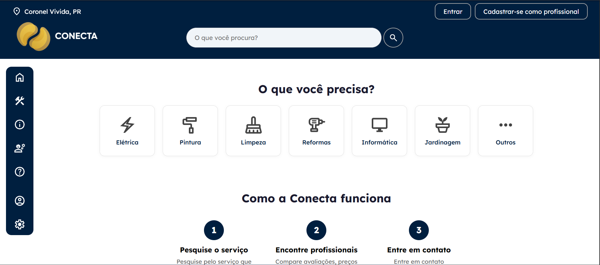
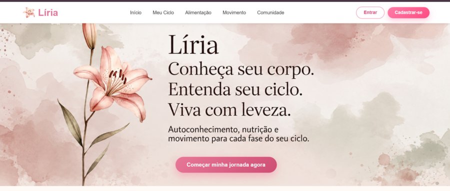
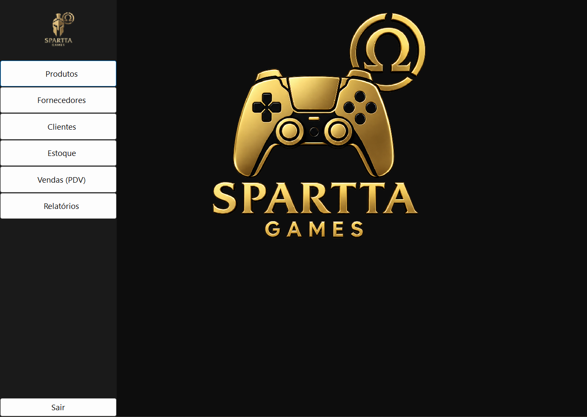
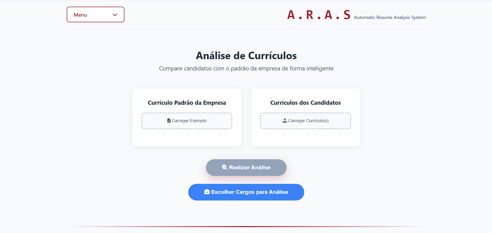
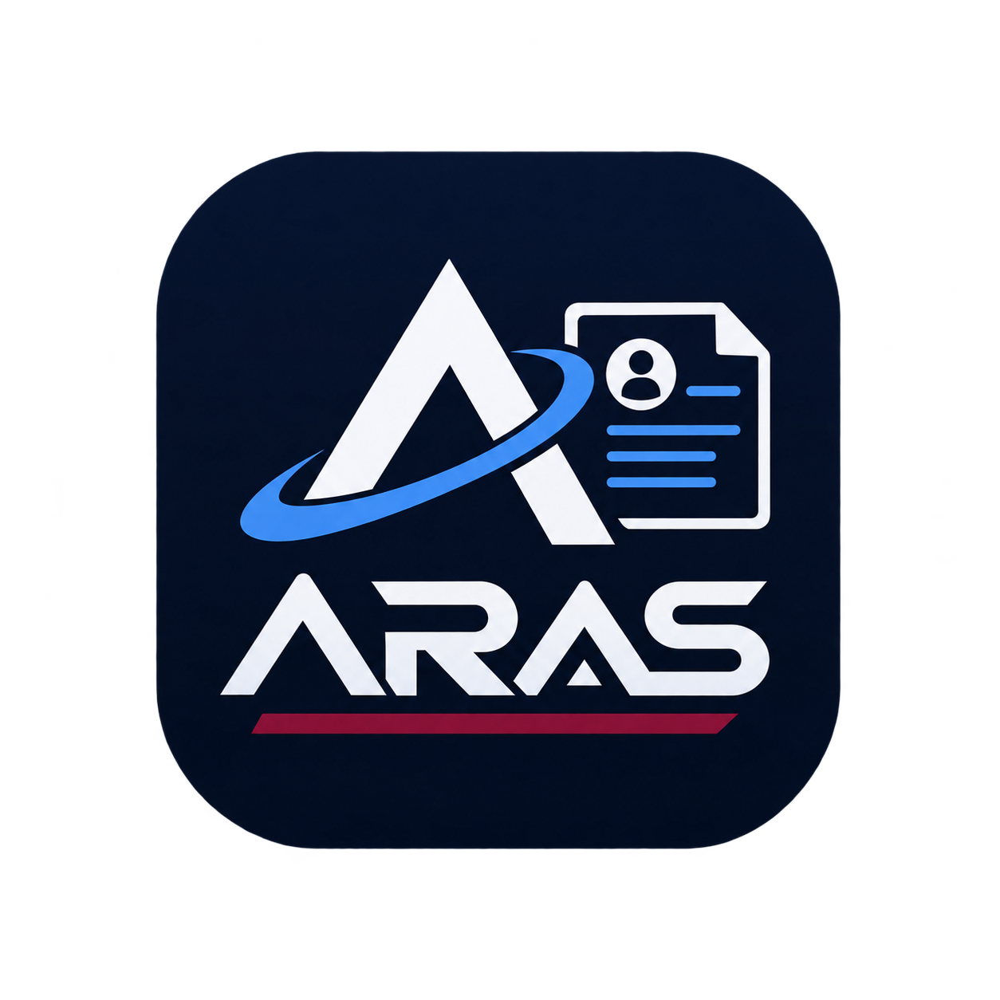

Explore alguns dos projetos mais inovadores apresentados no evento Nexus. Veja a descrição, tecnologias utilizadas e os talentos por trás de cada ideia.





Visite nosso evento Nexus e conheça os 50+ projetos incríveis desenvolvidos pelos nossos estudantes.